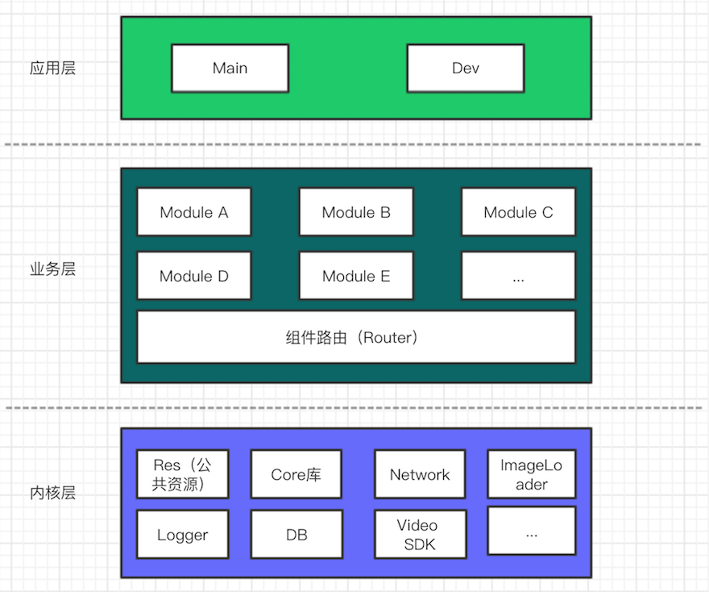

App 模块化之路——构建开发架构思路
随着业务的发展 App 开发技术也越来越成熟，对开发者来说 App 代码量也迅速地增长到一个数量级。对于如何架构 App 已经每个开发者面临的实际问题。好的架构可以提高开发者的效率，降低维护成本。
由于业务增长引起项目中代码量激增，以及历史遗留问题和结构混乱，作为一个有代码洁癖的程序员，很早就开始思考如何组织 App 架构的问题了。目前遇到的主要有以下几点问题：
- 代码量激增引起结构混乱
- 各个模块相互引用且耦合度高
- 无法独立开发或者调试组件代码
- 无法应对组件插拔的需求（例如：产品经理今天把这个功能加上，第二天又去掉，第三天又加回来T_T）
0x00 App 架构图
在阅读了大量的文档之后，根据实际项目开发遇到的问题，我总结了以下架构。由于水平有限，有不合理的欢迎拍砖

自上而下将 App 分为：
- 应用层
- 业务层
- 内核层
0x01 内核层
内核层是包含了为 App 提供公共服务的的一些库。例如：公共资源、网络库、日志工具、数据库、图片加载等核心库。这些是整个 App 基础库。
0x02 业务层
我认为这一层是整个 App 架构的关键。因为根据实际业务需求，这一层会分离出许多独立组件（其实就是对应于 Android Studio 的 Module），但这些组件可以独立运行，相当于一个小应用（组件如何独立运行将在应用层中会详细解析）。并且这些组件不再像传统的方式进行相互引用，而是采用了组件路由进行各个组件的通信。
比如组件 A 中需要跳转到组件 B 中的一个 Activity 页面，传统的做法是在 ModuleAActivity 中
Intent intent = new Intent(this,ModuleBActivity.class);
intent.putExtra("data", data);
startActivity(intent);
这样 Module A 与 Module B 耦合度就很强
比较好的做法应该是
Intent intent = Router.route(context,"BPackageName.ModuleBActivity",data);
startActivity(intent);
当然实现上面的路由原理也有很多方式，例如可以使用 Android 系统的隐式调用实现跳转通信。
在 Manifest 文件中
<activity android:name=".ModuleBActivity">
<intent-filter>
<data
android:host="moduleb"
android:path="/entry"
android:scheme="router"/>
<action android:name="android.intent.action.VIEW"/>
<category android:name="android.intent.category.DEFAULT"/>
<category android:name="android.intent.category.BROWSABLE"/>
</intent-filter>
</activity>
实际调用
String url = "router://moduleb/entry";
Intent intent = new Intent(Intent.ACTION_VIEW, Uri.parse(url));
intent.setFlags(Intent.FLAG_ACTIVITY_NEW_TASK);
PackageManager packageManager = getPackageManager();
List<ResolveInfo> activities = packageManager.queryIntentActivities(intent, 0);
if (!activities.isEmpty()) {
startActivity(intent);
}
Router 层目前有一个比较好的开源框架可以参考，来自 alibaba 的开源项目：ARouter
SDK 编码思维
业务层要实现比较好组件分离，对程序猿现在编码思维要转换一下，要切换到 SDK 思维。
那什么是 SDK 思维呢？
想想项目中引用他人编写的库的接口使用方式，就不难理解了。即站在使用者的角度上思考：如何使用接口才是最方便的？例如公司现有好几个 App 产品，每个 App 都需要使用同样的授权登录。那么这个授权登录模块就可以独立成一个组件。
假设将授权登录组件命名为auth。那么其它组件在使用的时候可能类似以下代码片段
AuthApi.authorize(context,userId,password).onAuthorizeFinished(
authInfo->doAuthorizeWorks(authInfo)//处理登录后的逻辑，把授权码保存用于请求其他业务接口，例如请求用户信息等
);
所以，作者觉得接口设计或者提供应该是利他主义的。当然这纯粹是作者的一家之言，欢迎继续拍砖。
0x03 应用层
顾名思义，这一层是对整个 App 的整合，也是 App 的入口。这里有 Main 和 Dev。其中 Main 是对各个业务组件的整合，是最终打包的产品的上层应用。而组件入口是独立运行和调试各个组件的子应用。
Dev 在 Android Studiao 中是对应一个 Application 。在 gradle 中配置为
apply plugin: 'com.android.application'
它是一个可以独立运行的子工程，要调试 Module A 那么在 Dev 中将引用该组件
dependencies {
compile fileTree(dir: 'libs', include: ['*.jar'])
compile project(':moduleA')
...
}